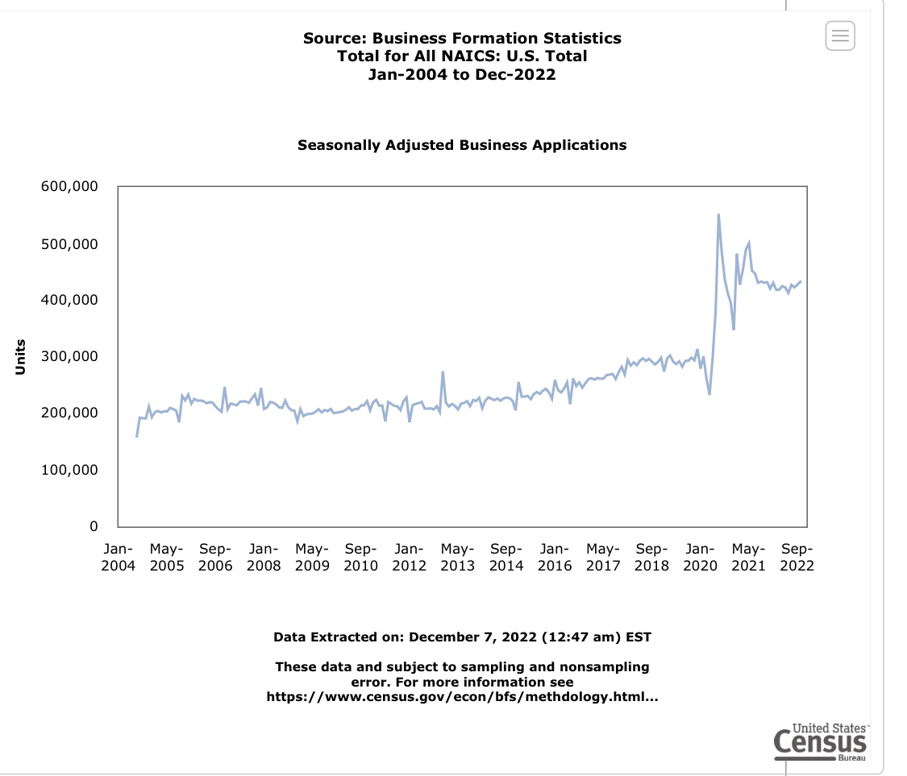

Businesses are Launching Like Crazy
There’s never been a better time to start a business. The Census shows there are over 200,000 new business applications per month more than pre pandemic.

What’s driving this?
Listening to The Unintended Consequences of Working from Home it dawned on me that there’s a hyper acceleration of innovation happening.
Consider the rise of AI tools like ChatGPT and StableDiffusion. Chamath Palihapitiya discusses the expansive applications for these services. What was once SaaS will become MaaS (models as a service). There will be models for everything: copy writing, code debugging, converting wireframes into working apps, ad generation, book writing…
While tools like ChatGPT are just in demo mode, it’s wildly apparent they’ll be an impetus for new ideas and reducing the friction of getting to the answer. For example, as a data scientist if I need boilerplate code to clean some data, I can ask ChatGPT for the 80% solution. I’m already spending 30% of my day copying code snippets from StackOverflow and making it work for my problem. ChatGPT will just accelerate that process. 10 years from now if Neuralink can read my thoughts I don’t even need a keyboard to do this…we’ll build things at the speed of thought.
Consider this for writers and marketers. They’ll use ChatGPT to unblock them, generate ideas, and get started. Innovation across the board will accelerate because the kinetic friction to getting started will reduce to zero. You can then spend your time on the editing and refining.
The Best Time to Start a Business
I digress. Why is now the best time to build a software business?
- Compute is cheap. Gone are the days of having to build a server to prototype and idea.
- Barriers to prototyping are nearly free and scaling with the cloud is nearly infinite. Consider how the Gas App can launch to 100,000 new users per day with just a few developers.
- Modeling is now easy. All cloud services have their own AutoML tools to build machine learning models for you.
The center of all of this is scalable data infrastructure and AI.
Future of Data Science
The data scientist of today may still be using sklearn to manually do hyperparameter tuning, but the data scientist of tomorrow will either be exclusively building MaaS B2B products or be the one person in their organization who will leverage all the MaaS tools.
If we can ask ChatGPT for complex answers it learned from the internet, why couldn’t something similar be trained on your company’s internal data? If that’s possible, then why couldn’t you just have a Q&A session with your internal ChatGPT? Consider the following example:
- “Hey KITT, what are the user segments generating the most revenue on Tuesdays at 5pm?” (Analytics)
- “How many sales do we anticipate from these users next Tuesday?” (Machine Learning)
- “What ads have been most effective for us in driving new sales in the past 7 days?” (Statistics)
- “Okay, KITT, generate 3 variants of that ad for next Tuesday” (StableDiffusion generating a new Ad)
- “I like ads A, B and C. launch an experiment on Facebook/TikTok, run it for three days and dynamically allocate ad spend to the best ad.” (Business integrations, statistics, ML models)
The data scientist of the future will be the one with deep understanding of these tools and an awareness of their biases. It will be very difficult to know when they’re lying to you. The in-house data scientist will be keen on knowing the biases in the data fed into these algorithms and how to make judgments on where to go next.
Early stage companies won’t need data scientists because most of this stuff will be off the shelf and easy for an engineer to integrate. That means that the data scientists will join these MaaS companies to build out optimized products that solve these niche problems.
Takeaways
Data Scientists shouldn’t be scared their jobs will disappear. They should be excited that they’ll be joining companies that automate what they’re currently doing and offer it as a service.
_________________________
For coaching on data analytics or machine learning, reach out.